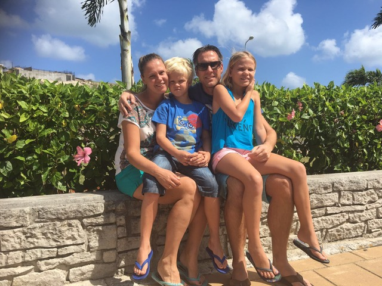

Holten helpt Sint-Maarten
(IBAN) NL67 RABO 0322 7638 27



Woensdag 6 september, 13.00 uur Nederlandse tijd. Holten zet zich schrap, want 7.000 kilometer verderop begint orkaan Irma aan haar allesverwoestende ramptocht over Sint Maarten. De gedachten gaan uit naar alle inwoners van Sint Maarten, maar vooral gaan de gedachten uit naar oud-Holtenaren Herbert Beldman, Karin Hauptmeijer en hun twee kinderen Lindi en Thijne. Zij wonen sinds enkele jaren op Sint Maarten. Hoe gaan zij deze immense orkaan overleven?
Familie, vrienden en bekenden blijven lang in onzekerheid, maar omstreeks 23.30 uur is dan toch het verlossende antwoord: Wij zijn alle vier gezond en veilig
.
Mondjes maat komt er informatie binnen over de toestand van het gezin nadat de orkaan Irma haar verwoestende kracht heeft getoond. Via de app geeft Herbert de volgende update:
De verwachting is dat de stroom binnenkort weer beschikbaar is, maar dat water nog even gaat duren. Op dit moment worden iPad's en telefoons opgeladen via een aggregaat om contact te kunnen leggen met familie en vrienden. Bij ons eigen huis is de schade gelukkig beperkt gebleven, maar bij een groot deel van de huizen is de schade groot. We hebben nog genoeg eten en drinken voor een kleine week, maar moeten wel voorzichtig aan doen. Er schijnen binnenkort weer wat supermarkten open te gaan. Grootste probleem zijn nog steeds de plunderingen. Ik zag colonnes mensen met meubilair en de drankvoorraad een hotel uit komen.


Op de vraag of we als vrienden wat kunnen betekenen voor het gezin komt het antwoord dat we voor hen persoonlijk weinig kunnen doen. Wel wordt gevraagd vooral aan inzamelingsacties te geven. Er gaat veel geld nodig zijn voor wederopbouw van het eiland
, zegt Herbert.
De vrienden van Herbert Beldman (Suffendo) en Karin Hauptmeijer (Supergirls) hebben zich machteloos gevoeld, die woensdag 6 september. En iedereen is ontzettend blij dat zij relatief ongeschonden de orkaan hebben weerstaan. Maar het gaat niet alleen om het oud-Holtense gezin. Het gaat nu om het hele eiland, waar nu, ruim een week later nog steeds complete chaos heerst. En, na het besef een enorme natuurramp overleefd te hebben, komt nu de volgende uitdaging: de wederopbouw van een prachtig eiland en zorgen dat iedereen veilig is én blijft!
Daarom willen de vrienden van Herbert en Karin, samen met het Holtens Ondernemers Huus, graag een steentje bij dragen aan de enorme opgave die het eiland Sint Maarten te wachten staat na orkaan Irma. Er wordt binnenkort een rekeningnummer geopend waarop Holtenaren en bedrijven hun bijdrage kunnen storten en er worden diverse acties georganiseerd om geld in te zamelen voor de wederopbouw van Sint Maarten. De komende periode zal dit verder worden opgezet en gedeeld worden via Facebook, een website en natuurlijk Holten Extra. Het zou mooi zijn dat Holten Sint Maarten Helpt met het weer leefbaar maken van dit eiland.